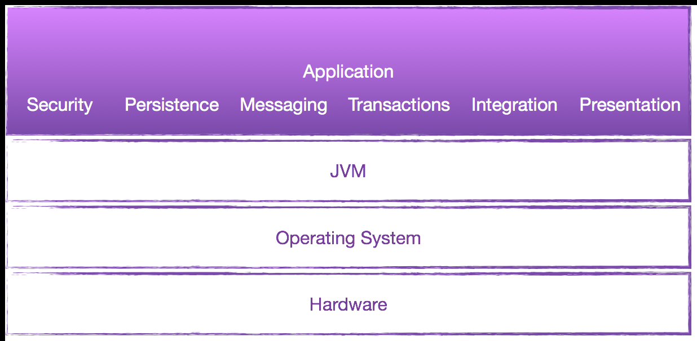
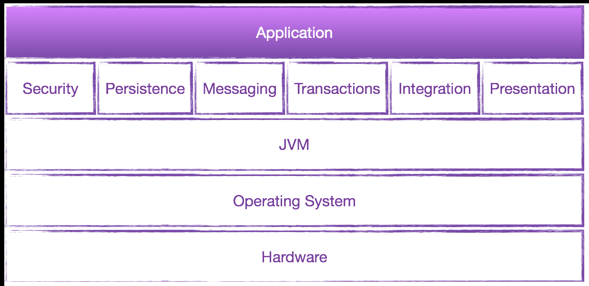
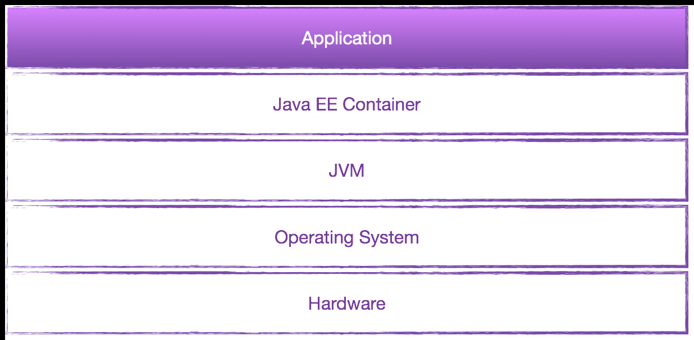
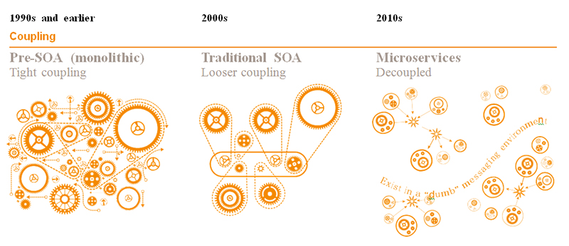
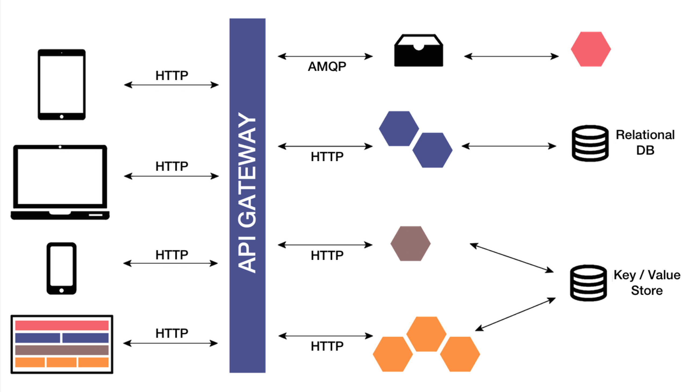
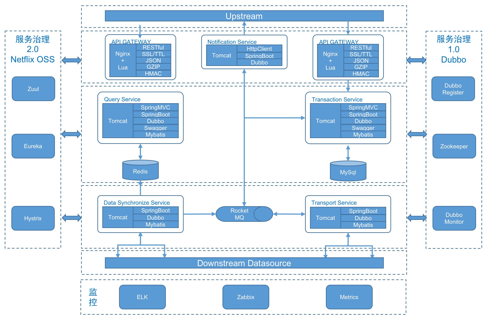
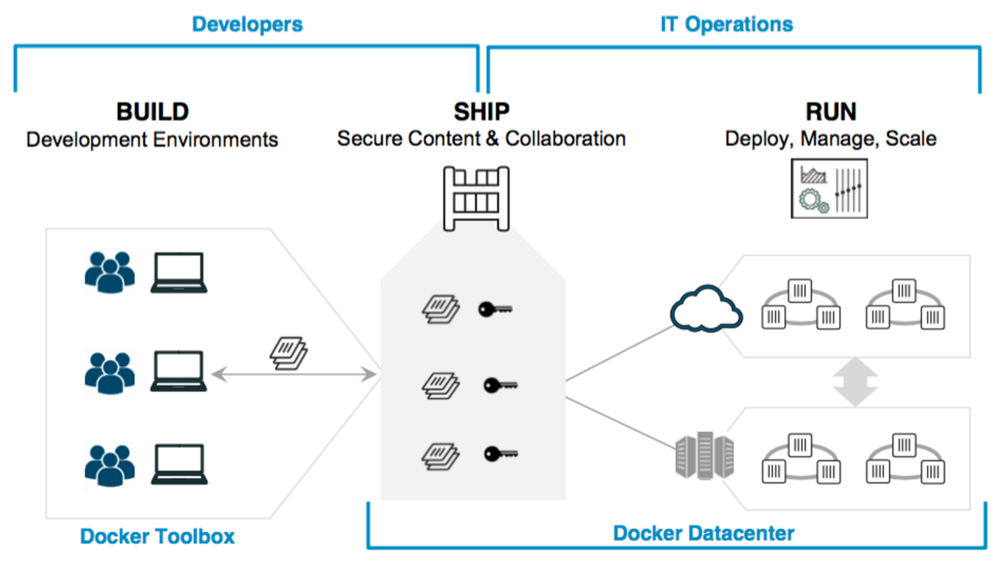
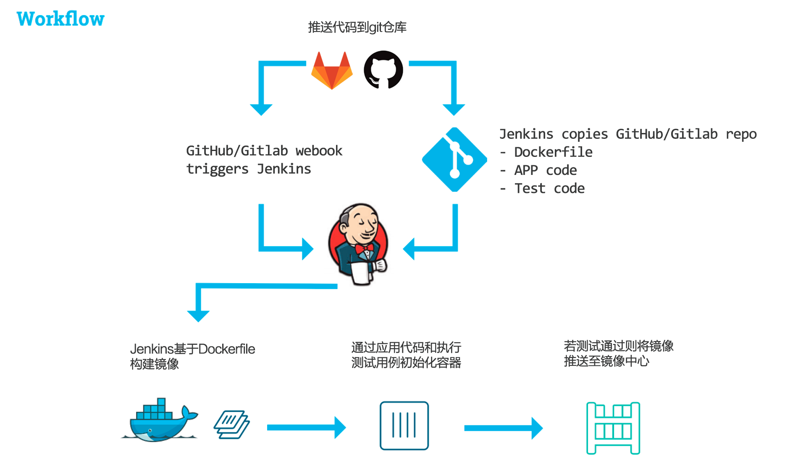
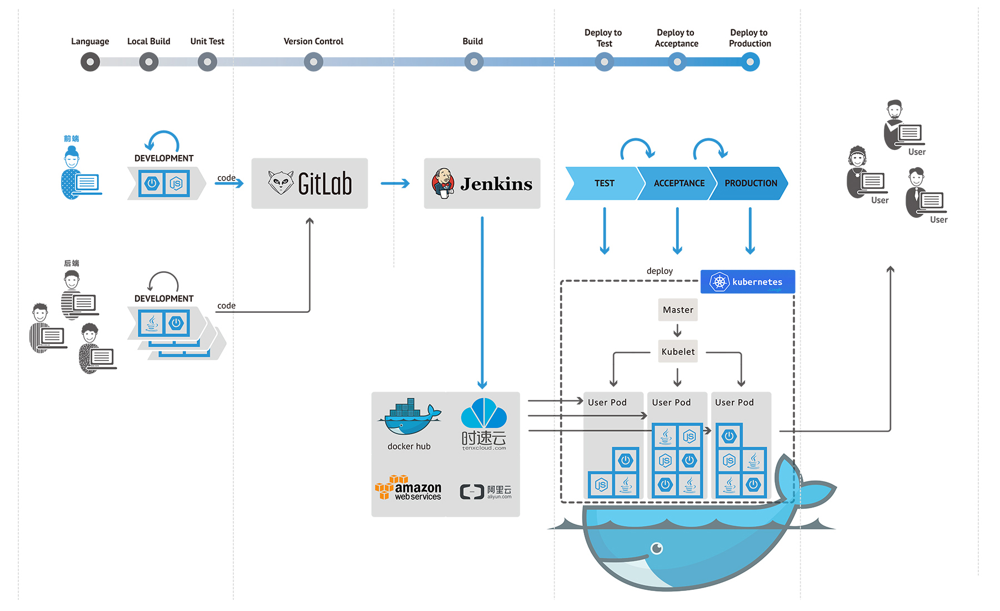

微架构与容器化的持续交付
微服务
Container-less
Self-contained
In-container
Container-less: 单一JAR部署

Self-contained: 嵌入式框架(Spring Boot、Wildfly Swarm)

In-container: 完整的Java EE容器

Why 微服务 ?
传统项目
项目是多个系统的堆叠:
- 扩展性低, 无法快速响应变化, 构建慢, 运维成本高
SOA 架构
- 更加敏捷, 独立, 但是改动必须适应整体设计
- 总线模式, 强绑定技术栈(Java EE), 增加对接, 改造成本
微服务
- 自由创建服务, 持续部署, 风险降低
- 服务异构性, 有针对性的技术方案, 轻量的通信模式
三种架构风格比较

Where 微服务 ?
- 对速度要求高, 需求变化非常频繁
- 变更发生在应用的不同区域, 功能隔离与快捷部署的
需求远高于模块间聚合性的要求 - 功能可以简单的分割为多个独立的组件
微服务典型架构

我们的尝试
- 业务横向拆分
- 构建自治型, 专注型的服务应用
- 服务间灵活稳定的相互方式
- 保证持续部署及运行能力
- 实践可行的服务注册、发现、负载均衡方案
- 完善日志监控, 性能度量
众蓝影云微服务架构

Docker
目前的挑战
面临的问题
- 快速高效的RPC调用(ZeroRPC, SOAP, REST, Queues)
- 如何高效的部署及管理多个应用
- 服务间的网络管道如何管理
Docker 能否为我们解决一些问题?
- 配置化, 快速, 可重复式的构建服务
- 托管式的发布及管理服务
- 成熟的网络方案及集群管理策略
Why Docker ?


与 Jenkins, GitHub, Gitlab 可以很好的集成
通过镜像与容器管理实现托管式发布
无需处理环境不一致性
具备成熟的网络管理和集群解决方案(Flannel, Swarm, Kubernetes, Mesos, Marathon)
生态环境发展迅速, 通过CaaS平台交付灵活,敏捷,可控的应用
开发: 无需关心对平台和语言的依赖性, 加强了技术灵活度
交付: 开发可以自己设计开发-测试-发布的整个流程
运行: 对于弹性伸缩, 安全性和可靠性也有广泛的支持

持续集成(CI)
- 开发人员向GitHub/Gitlab推送代码或提交合并请求
- GitHub/Gitlab Hook自动触发Jenkins增量构建
- Jenkins构建Docker镜像, 启动Docker容器, 进行测试
- 测试通过后, 合并代码, 推送至镜像中心

众蓝影云持续集成/交付流程

Questions ?
 @clarkdo
@clarkdo github.com/clarkdo
github.com/clarkdoUse a spacebar or arrow keys to navigate